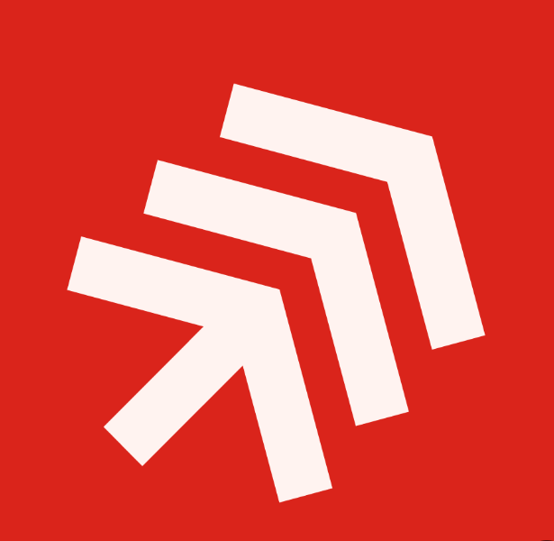

Neon 4 is stepping in · Gemini 4 Neon on the Parasoft vs SWE-sweep scoreboard
Technical benchmark brief · update · 01
Neon 4 is stepping in
Google ranks Gemini 4 Neon #1 on the Coding Agent Index and claims 39.0% on SWE-sweep inside its own Antigravity harness. We measured the same model on the same 488 C/C++ bugs, first under Amp, now also under Antigravity. Here is what Neon 4 does to the scoreboard, and how much of every number is the harness.
Gemini 4 NeonGoogle DeepMind · the model under test

Amp · first harness we ran it in
Parasoft C/C++test · the static analysis yardstick
ESL · measurement and verification
Bugs on the table
488 real defects
The same 14 C/C++ SWE-sweep repositories and oracle bugs as the Parasoft benchmark
Neon under Amp (measured)
18.2%
89 of 488 bugs matched on the changed lines, 15.0% on the exact fixed line, from 2,288 findings scored against the maintainer fix commits
Neon under Antigravity (new pilot)
26.1%
Same model, same prompt, same commits, Google's own harness, on the first 3 repositories: 12 of 46 bugs, versus 22 of 46 under Amp
Where bug hunting on the same 14 C/C++ repositories stood before the model entered
Static analysis: Parasoft C/C++test
53.1%
Whole-codebase scan of each complete buildable project, real compile flags, Flow Analysis Standard + MISRA C 2025 / MISRA C++ 2023 + CERT. 2,193,448 findings mapped to the 488 oracle bugs: 53.1% region, 28.9% strict
Agents before Neon: SWE-sweep bests
~5.1%
The best published agent results on these same 14 repositories add up to about 25 of 488 bugs resolved. Live leader across all 4,068 SWE-sweep bugs: Astra 6 at 9.5%
What changes in this deck
Two Neon 4 measurements land on this scoreboard: 14 full autonomous hunts under Amp (all 488 bugs), and a pilot of the same hunts under Google's Antigravity CLI (3 repositories, 46 bugs), the harness Google itself used for its claim
Parasoft numbers and oracle definition: parasoft-vs-swe-sweep deck · SWE-sweep: Lieret et al., swesweep.com/paper · 25 November 2026
The model · 03
What Google claims for Gemini 4 Neon, November 2026
The numbers Neon 4 brings with it, all self-computed by Google inside its own harness
Claim
Value
Fine print
SWE-sweep, provider harness
39.0%
Subtask-weighted reward on hidden tests, computed in Antigravity-CLI 1.5.9; Opus 5.5 in Claude Code: 10.1%, GPT-6.2 Sol in Codex: 8.3%
SWE-sweep, mini-SWE harness
12.8%
Shared minimal harness; Opus 3.6%, Sol 11.6%
Terminal-Bench 4.1
65.2%
Cheating-adjusted, Artificial Analysis, public Antigravity-CLI 1.5.9
FrontierCode 2.0
46.2%
Public leaderboard, high thinking
AA Coding Agent Index
58.64, #1
Composite measured inside Antigravity CLI; Fable 5.2 in Claude Code 58.47, Astra in Codex 53.47
Cost per task
$6.44 to $6.86
Artificial Analysis: about 17% under Carbon, about half of Opus 5.5's $12.61
Source: Gemini 4 Neon model card and launch blogs, November 2026; Artificial Analysis. Every agentic number above was measured with Neon inside Antigravity-CLI
Method · 04
The campaign: 14 autonomous hunts, scored against the oracle
One Amp thread per repository, the same scoring rule as the Parasoft arm: a finding counts only if it identifies the defect the maintainers actually fixed
SWE-sweep oracle per bug: pre-fix file blob + changed lines + the maintainer's fix commit
|
v
14 autonomous Amp threads, Gemini 4 Neon, one per repository
| open-ended multi-hour bug hunts: no bug hints, no hidden tests, no reward signal
| each thread delivers one consolidated report plus a findings JSON (2,288 findings total)
v
per-bug verification: every candidate match judged against the fix diff
| accepted only when the finding names the same defect the maintainer's commit changed
| line overlap with a different mechanism counts as a miss
v
result: 89 of 488 bugs matched on changed lines (18.2%), 73 on the exact line (15.0%)
2,199 of 2,288 findings (96.1%) describe defects outside the benchmark's bug list
Scoring identical to the Parasoft arm: region = any changed line of the bug, strict = the exact line the fix removed or rewrote. Per-bug verdicts with fix commits: reports/<repo>_scored.md in the benchmark repository
Results · 05
The scoreboard with Neon 4 on it: Parasoft still leads 12 of 14
All 488 bugs. Neon under Amp vs the Parasoft static scan vs the best SWE-sweep agents
Repository
Lang
Bugs
Neon region
Neon strict
Parasoft region
Parasoft strict
SWE-sweep best
jerryscript
C
15
7 (46.7%)
6 (40.0%)
86.7%
80.0%
20.0%
godot
C++
17
1 (5.9%)
0 (0.0%)
76.5%
41.2%
0.0%
opencv
C++
47
13 (27.7%)
9 (19.1%)
74.5%
40.4%
2.1%
cvc5
C++
38
1 (2.6%)
1 (2.6%)
71.1%
31.6%
2.6%
duckdb
C++
109
18 (16.5%)
14 (12.8%)
68.8%
32.1%
2.8%
micropython
C
22
9 (40.9%)
8 (36.4%)
68.2%
31.8%
9.1%
proj
C++
21
3 (14.3%)
3 (14.3%)
61.9%
33.3%
9.5%
tarantool
C
40
15 (37.5%)
14 (35.0%)
57.5%
45.0%
7.5%
php-src
C
26
0 (0.0%)
0 (0.0%)
50.0%
26.9%
3.8%
hdf5
C
14
2 (14.3%)
2 (14.3%)
50.0%
42.9%
28.6%
libexpat
C
9
6 (66.7%)
4 (44.4%)
77.8%
33.3%
44.4%
z3
C++
11
2 (18.2%)
1 (9.1%)
36.4%
27.3%
0.0%
arrow
C++
47
11 (23.4%)
10 (21.3%)
23.4%
8.5%
2.1%
gdal
C++
72
1 (1.4%)
1 (1.4%)
4.2%
1.4%
0.0%
Total
488
89 (18.2%)
73 (15.0%)
53.1% (259)
28.9% (141)
~5.1% (25)
Neon measured under Amp, 14 autonomous hunts, verified per bug against fix commits; Parasoft from the parent benchmark; SWE-sweep bests from the parent deck. 25 November 2026
Results · 06
Same picture, drawn: Parasoft leads in 12 of 14, Neon ties arrow and wins libexpat
Percentage of the 488 bugs matched on the changed lines, per repository
Neon under Amp (region) %Parasoft C/C++test (region) %
Neon: autonomous open-ended hunt per repo in Amp. Parasoft: whole-codebase scan. Same per-bug changed-line regions.
Per-bug verdicts with fix commits: reports/<repo>_scored.md in the benchmark repo; Parasoft numbers from the parent deck. 25 November 2026
Results · 07
Where the model beats the tool: small search spaces
Neon's wins are real but concentrated: repositories small enough for one context to hold
libexpat: Neon wins strict
44.4%
Neon strict beats Parasoft strict here (33.3%) while Parasoft keeps the region lead (77.8% vs 66.7%). Nine bugs, one file: the whole parser fits in one agent context
micropython: Neon wins strict
36.4%
Neon 40.9% region / 36.4% strict against Parasoft 68.2% / 31.8%. The 296-finding deep hunt paid off on the interpreter core
arrow: dead heat
23.4%
Identical region hit rate, and Neon's strict (21.3%) beats Parasoft's 8.5%: the model lands on the exact fixed line more often where it lands at all
Pattern from the supplement: every Neon win sits in a repository whose bug-bearing surface fits one multi-hour thread; nothing similar appears in duckdb (109 bugs) or gdal (72). 25 November 2026
New measurement · 08
The Antigravity pilot: same model, Google's own harness
We re-ran the identical hunter prompt with Gemini 4 Neon inside Antigravity CLI 1.5.15, at the exact commits the Amp arms used, on the first 3 repositories
Arm
libexpat (9 bugs)
jerryscript (15)
micropython (22)
Total region
Total strict
Parasoft C/C++test (published)
77.8% / 33.3%
86.7% / 80.0%
68.2% / 31.8%
35/46 = 76.1%
22/46 = 47.8%
Gemini 4 Neon in Amp
66.7% / 44.4%
46.7% / 40.0%
40.9% / 36.4%
22/46 = 47.8%
18/46 = 39.1%
Gemini 4 Neon in Antigravity (pilot)
66.7% / 55.6%
26.7% / 20.0%
9.1% / 9.1%
12/46 = 26.1%
10/46 = 21.7%
The surprise
~0.55x
Neon scored roughly half as many oracle bugs under Google's own harness as under Amp, on identical prompts, commits and scoring. The harness moved the result more than any model difference could
Where Antigravity is better
55.6%
libexpat strict: Antigravity Neon 5 of 9 beats both Amp Neon (4) and Parasoft (3). Fewer, deeper findings: 187 total pilot findings vs 2,288 across the full Amp campaign
Pilot scoring: reports/agy_scored.md in the benchmark repo, every one of the 16 matched pairs verdicted against the maintainer fix commit, no unresolved pairs. Runs 22-25 November 2026
New measurement · 09
Three arms, drawn: the gap is in micropython
Region hit rate per repository: Parasoft vs Neon in Amp vs Neon in Antigravity
Parasoft C/C++test %Neon in Amp %Neon in Antigravity %
Same model in two harnesses. libexpat is a tie; the collapse concentrates in micropython, the largest and deepest hunt.
Parasoft, 3 repos
35/46
76.1% region, 47.8% strict: the static scan keeps its lead on every one of the three
Neon in Amp, 3 repos
22/46
47.8% region, 39.1% strict: the full-campaign arm, for scale
Neon in Antigravity, 3 repos
12/46
26.1% region, 21.7% strict: the same model under Google's own CLI
Per-bug verdicts: reports/agy_scored.md and reports/<repo>_scored.md in the benchmark repo. 25 November 2026
Analysis · 10
Reading the pilot: fewer true hits, not a stricter judge
Why the Antigravity numbers are a harness effect, not a scoring artefact
Output volume collapsed
micropython: 68 findings under Antigravity vs 296 under Amp; jerryscript 78 vs 97; libexpat 41. Fewer findings means fewer chances to land on an oracle bug, and the misses follow
The rejects mirror Amp's
All 4 rejected pairs are line-overlap-only mechanism mismatches, on the same oracle bugs the Amp arm also rejected or missed (042a8ceedc15, ef93b8337084, f67d952cb3de). Judging did not get harder; the hits got rarer
What we cannot rule out
Three repositories, 46 bugs, two days of runs interrupted by quota windows. The direction (Amp ahead) is consistent across all three repos and both metrics, but the exact ratio is pilot-grade, not campaign-grade
Verdict detail per pair: reports/agy_scored.md in the benchmark repo. 25 November 2026
Harness · 11
What the harness actually did: four measured frictions
Documented during the pilot, each one a difference between the Amp loop and the Antigravity loop
Safety filters
Gemini's filters deterministically blocked the original hunter wording for two of three repos; agy exits fatally on a block. Only neutral rewording (quality review, published advisories) got through. The prompt was not the same prompt in the strict sense
No sub-agent fan-out
Headless subagents hang forever in agy --print mode. The Amp campaign's parallel hunts became a single-threaded sequential hunt. On micropython that is the difference between 296 findings and 68
Quota windows
The Google AI Pro account's roughly 5-hour window was exhausted mid-hunt; micropython completed only across pauses and resumes on two days. The full 14-repo campaign would need days of quota
What stayed identical
Model, base commits, hunter intent, extraction schema, matcher, and the per-pair verdict methodology against fix commits. Any residual effect is the harness, by construction
Run logs with the 429 RESOURCE_EXHAUSTED windows and resume driver: agy-runs/ in the benchmark repo. 25 November 2026
Analysis · 12
The harness is worth a multiple, and now we have measured it
Google's own numbers said so; our pilot confirms it on independent ground
Harness spread, Google's numbers (SWE-sweep)
Neon in Antigravity-CLI (provider): 39.0%
Neon in mini-SWE (shared minimal): 12.8% ~3x spread
Opus 5.5: 10.1 (Claude Code) / 3.6 (mini-SWE)
GPT-6.2 Sol: 8.3 (Codex) / 11.6 (mini-SWE)
<- counterexample: the vendor harness scored lower
Harness spread, our pilot (bug-hunt region)
Neon in Amp: 22/46 = 47.8%
Neon in Antigravity: 12/46 = 26.1% ~1.8x spread
strict: 39.1% vs 21.7%
same model, same prompt, same commits,
same oracle, same human verification
The counterexample, in numbers
Sol in Codex (8.3%) scores below the same model in mini-SWE (11.6%): a badly matched agent loop can subtract. Harness effects are not automatically wins, which is exactly why a claim must name its harness
Why our pilot matters
It is an independent reproduction of the spread with a different task shape: open-ended multi-hour bug hunting with human verification, not fix-the-known-bug episodes with hidden-test rewards
The direction matches Google's own mini-SWE drop (39.0 to 12.8): take the model out of its tuned home harness and the score falls hard. Our pilot adds an independent data point with a different task shape: open-ended bug hunting instead of fix-the-known-bug episodes
Google numbers: Gemini 4 Neon model card, November 2026, self-computed. Pilot: reports/agy_scored.md. 25 November 2026
Verdict · 13
Read every agentic number as model plus harness
What Neon 4's entrance does to the scoreboard
On the model
18.2%
Neon 4 is the strongest bug hunter we have put on this benchmark: 3.5x the best SWE-sweep agents (5.1%), it ties or beats Parasoft on strict in three repos, and 96% of its findings are defects nobody catalogued
On the harness
2x
The same model halves between harnesses on our pilot subset, consistent with the 3x spread inside Google's own published numbers. A harness claim without naming the harness is not a model claim
On the scoreboard
53.1%
Static analysis still leads C/C++ bug hunting overall: Parasoft 53.1% region / 28.9% strict over 488 bugs beats every agentic configuration measured. The rational stack is both: Parasoft for coverage, Neon-class agents for depth on small cores
Every number on this slide is measured in this project or quoted from its named source. 25 November 2026
Thank you · 14
Every number here is reproducible or quotable
The measured side lives in the benchmark repository; the claimed side links to Google's own pages
Measured sources
Neon under Amp, 14 hunts, per-bug verdicts: reports/<repo>_scored.md, github.com/zuwasi/swe-sweep-parasoft-benchmark
Antigravity pilot, 3 hunts, 16 verdicted pairs: reports/agy_scored.md and agy-runs/ in the same repo
Parasoft numbers and the oracle definition: the parasoft-vs-swe-sweep deck
Claimed sources (Google)
Model card and evaluation methodology: deepmind.google/models/model-cards/gemini-4-neon